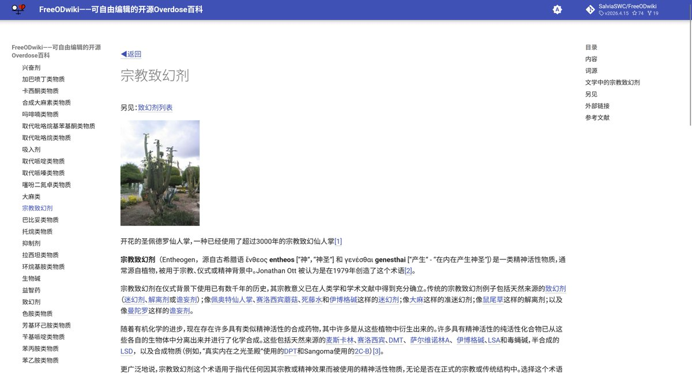

“Entheogen”指被某些用于宗教、民俗活动的致幻剂。例子包括植源的死藤水、相思汤，它们被当地人用于传统仪式；也包括合成的DPT，被一个宗教组织用于圣餐
因此，施用“Entheogen”的目的是服务于某个民俗文化的，而不仅限于宗教，其意义在于，让服用者看到相应文化中的“灵”，因此翻译成“启灵剂”更妥当啊

因此，施用“Entheogen”的目的是服务于某个民俗文化的，而不仅限于宗教，其意义在于，让服用者看到相应文化中的“灵”，因此翻译成“启灵剂”更妥当啊

有关英文药物用语“Entheogen”的译名问题
Entheogen仍被使用本身就是一个历史遗留问题。目前，FreeODwiki跟随较权威的中文维基百科，将其翻译成“宗教致幻剂”。但窝觉得这个译名不太妥当，毕竟不是只有宗教人士才能致幻。有文献将本词译为“民族致幻剂”，那就更不对了。
把它改译为“启灵剂"是否合适?🤔 https://t.co/Qi4OdrSTFU
Entheogen仍被使用本身就是一个历史遗留问题。目前，FreeODwiki跟随较权威的中文维基百科，将其翻译成“宗教致幻剂”。但窝觉得这个译名不太妥当，毕竟不是只有宗教人士才能致幻。有文献将本词译为“民族致幻剂”，那就更不对了。
把它改译为“启灵剂"是否合适?🤔 https://t.co/Qi4OdrSTFU